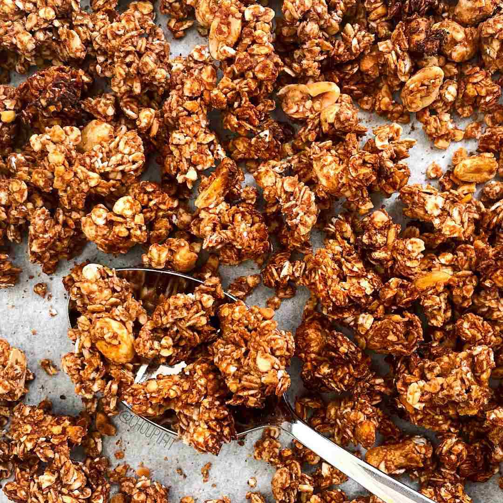

Granola au cacao
Ingrédients
×
- 3 mugs de flocons d'avoine
- 4 c. à s. de cacao
- 3 c. à s. de noix de coco
- 1 c. à s. de sésame
- quelques amandes
- 0.5 mug d'huile de coco
- 0.25 mug de sirop de riz
- 0.25 mug de sirop d'agave
- vanille

Préparation
Étape 1
Mélanger 3 mugs de flocons d'avoine, 4 c. à s. de cacao, 3 c. à s. de noix de coco, 1 c. à s. de sésame et quelques amandes.
Étape 2
Ajouter 0.5 mug d'huile de coco, 0.25 mug de sirop de riz, 0.25 mug de sirop d'agave et de la vanille. Mélanger.
Étape 3
Cuire 10min à 180ºC, remuer une fois et cuire encore 6min.
Conseils
- Surveiller : s’il brunit en surface, c’est déjà trop tard.
Résumé
3 mugs de flocons d'avoine
4 c. à s. de cacao
3 c. à s. de noix de coco
1 c. à s. de sésame
quelques amandes
Mélanger
0.5 mug d'huile de coco
0.25 mug de sirop de riz
0.25 mug de sirop d'agave
vanille
Mélanger
Cuire 180ºC cuire